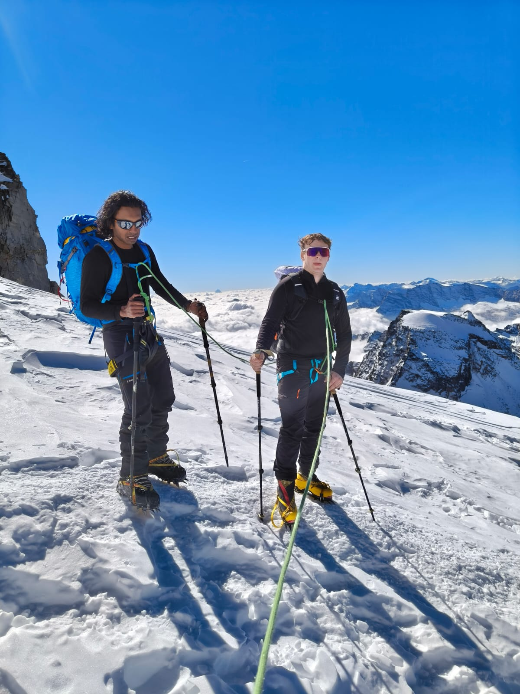

Skills beat gear
Winter travel rewards discipline: pacing, temperature control, navigation, and clear communication. These are the habits that make equipment actually work the way it should.
Pacing and heat management
- Start coldBegin slightly underdressed and warm up through movement.
- Micro-adjustSmall changes early prevent sweat-soak problems later.
- Food and water timingPlan warm stops and reduce the risk of fading late in the day.
Navigation fundamentals
- Map awarenessKnow bailouts, ridgelines, and exposure zones before you go.
- RedundancyPhone, offline maps, backup battery, and compass skills.
- Whiteout habitsUse short legs, clear bearings, and stop immediately if unsure.
Partner systems
- Shared standardsTurn-around rules, check-ins, and decision triggers should be agreed on early.
- SignalsUse a wind-proof communication plan for movement and stops.
- Practice daysBuild skills on lower-stakes trips before committing to bigger winter routes.
Drills and milestones
- Layering drillTime yourself changing layers with gloves on without dropping gear.
- Navigation drillPlan and follow a short bearing-based route in safe terrain.
- Traction drillPractice transitions on low-consequence slopes before you need them for real.

Embedded Video
Mountain terrain in motion
I embedded this video because motion shows mountain scale, slope, and exposure in a way a still image cannot. That makes it a good fit for the skills page, where terrain judgment matters.
This is one of my own short mountain clips, and I included it because movement shows pace, terrain, and exposure more clearly than a still photo alone.